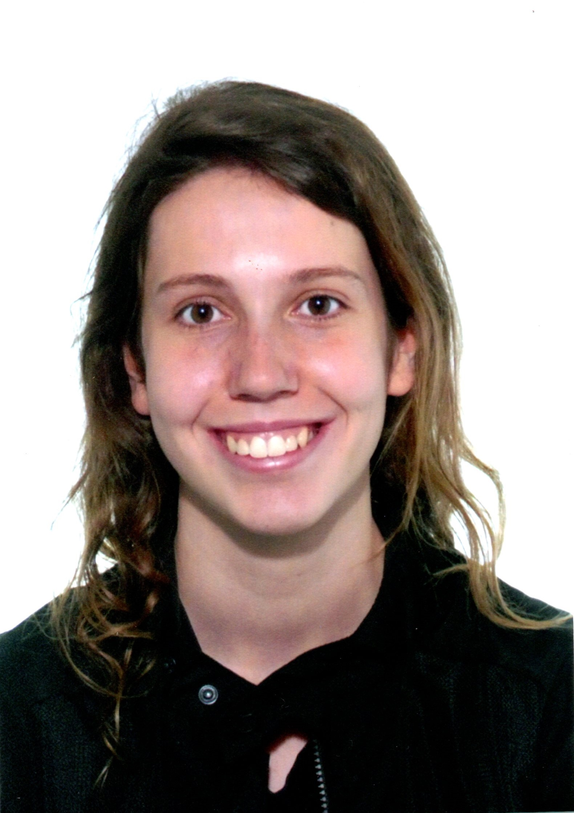
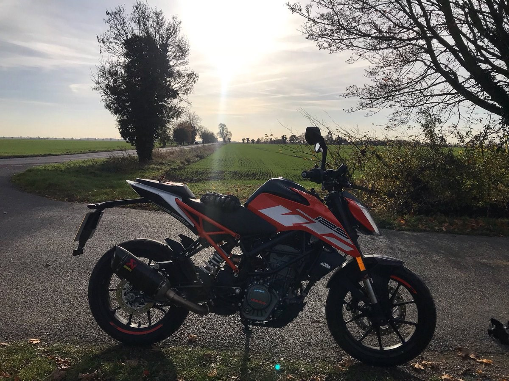

Em dic Mireia Brunsó Vila i soc estudiant de Enginyeria Informàtica a la Universitat de Girona.
Escriure text aquí jeje
Em dic Mireia Brunsó Vila i soc estudiant de Enginyeria Informàtica a la Universitat de Girona.
Escriure text aquí jeje
Condueixo motocicletes des dels 16 anys. És una afició que em fa descobrir nous espais de la meva regió. Disfruto conduint per zones amb poc trànsit, per poder observar el paisatge i l'entorn.
He sigut aficionada del FC Barcelona des del meu neixament. M'encanta anar a l'estadi a animar a l'equip. He viscut moments molt especials gràcies a això, com el meu viatge a Torí per la final de la Champions femenina 2022.

Durant la meva vida he tingut l'oportunitat de visitar diversos països europeus, sempre acompanyada dels millors companys que podria desitjar, com la meva familia i els meus amics. Desitjaria poder explorar món per descobrir noves cultures i persones.